最全Pycharm教程（4）——有关Python解释器的相关配置
最全Pycharm教程（6）——将Pycharm作为Vim编辑器使用
最全Pycharm教程（8）——Django工程的创建和管理
设想这样一种情况，你在一个平台上操作你的工程，但你希望在另外一个平台上完善并运行它，这就是为什么Pycharm做了很多工作来支持远程调试。
在虚拟机上运行一个工程主要包含以下步骤：
（1）定义一个虚拟框架define a virtual box
（2）需要在虚拟框架下配置一个远程的解释器configure a remote interpreter
（3）在远程控制台加载当前工程launch your script in the remote console
1、准备工作
确定你的Pycharm已经拥有以下环境：
（1）安装了Oracle's Virtual Box
（2）安装了Vagrant
（3）将一下这些可执行文件添加到环境变量中
Vagrant安装文件下的vagrant.bat文件，这部分工作应该由安装程序自动完成
Oracle's VirtualBox安装文件下的VBoxManage.exe文件。
确保Pycharm的Vagrant插件可用：单击主工具栏中的设置按钮，在设置对话框中打开 Plugins页面，显示插件默认可用：
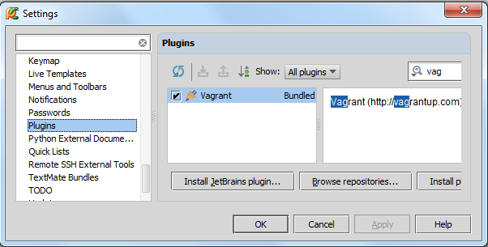
至此准备工作完成，正式开始。
2、创建一个虚拟的virtual box
在设置对话框中（单击主工具栏的设置按钮），单击 Vagrant界面，然后输入可执行文件路径以及实例路径。
如果框架已经预先定义好，以上选项就会出现在一个下拉列表中，从中选择一个即可：
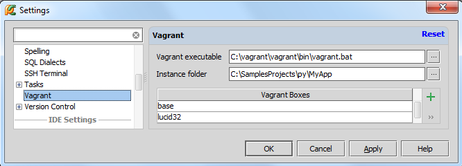
如果当前没有合适的virtual box，则可通过单击绿色的加号来添加一个，输入框架名称和下载地址：
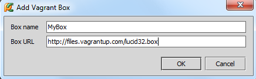
单击OK，Pycharm开始自动下载VM模板：
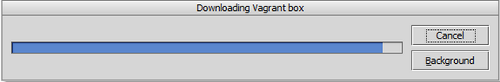
至此你已经新建了一个virtual box并已经将其添加到了当前环境中。
注意Tool 菜单下的Vagrant 命令，这个命令与标准的Vagrant行为相关联。
一旦创建了Vagrant box，就需要在工程存根下对其进行初始化。在主菜单上单击Tools | Vagrant，选择 Init in Project Root:
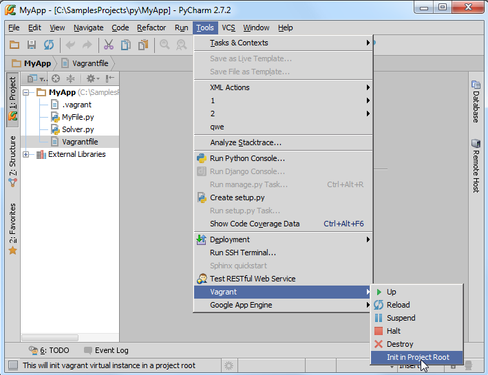
选择你准备初始化的Vagrant box：
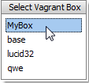
此时会创建对应的Vagrantfile文件，可以根据要求对其进行更改：
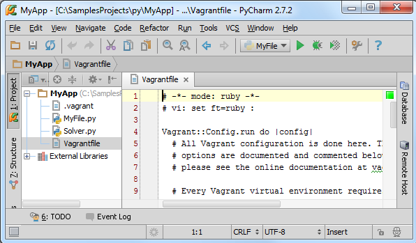
初始化完成后，执行vagrant up命令（在Vagrant 菜单中选择Up 命令）：
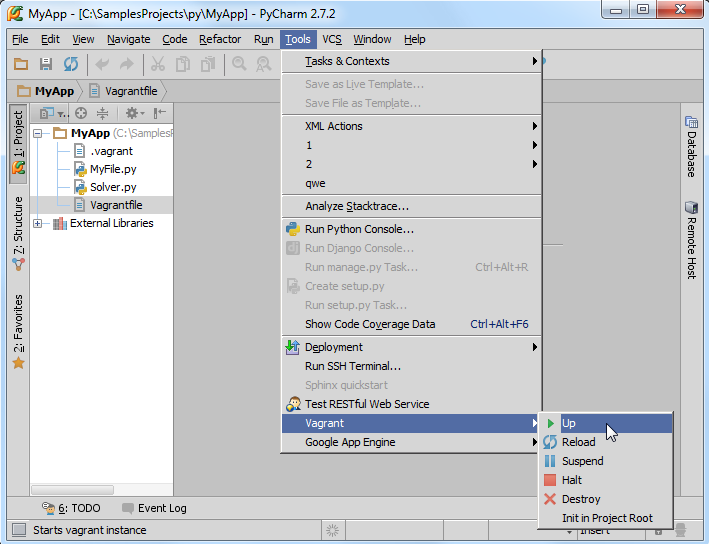
Pycharm会自动运行vagrant up 命令，并在控制台界面显示输出结果：
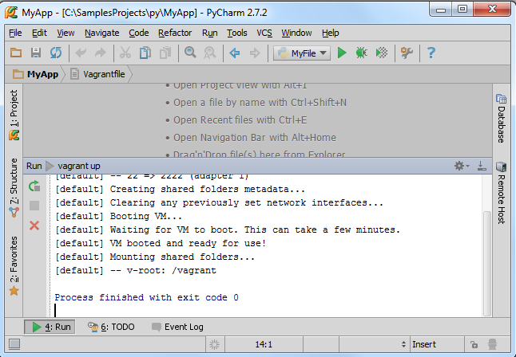
3、在虚拟机上配置远程解释器
再次打开设置对话框（单击主工具栏上的设置按钮），选择Project Interpreter页面，在这里你可以从下拉列表中选择一个对应的解释器，但是如果当前没有可用的解释器，我们就需要单击Configure Interpreters来自定义一个：
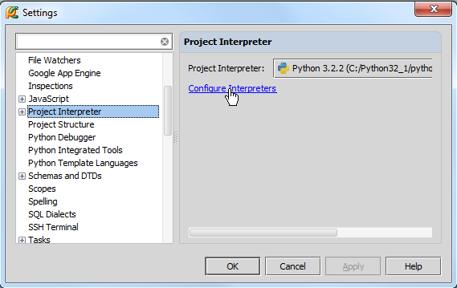
此时会打开Python Interpreters界面，单击绿色的加号来选择一个远程的解释器：
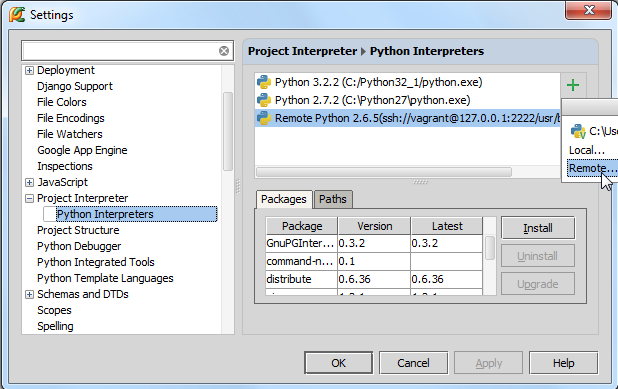
在Configure Remote Python Interpreter 对话框中，需要进行服务器配置。这些设置可以手动设定，也可以从已经定义好的Vagrant配置文件中导入，在这里我们选择第二个方式。 单击 Fill from Vagrant configuration按钮，将会根据配置文件的内容自动填充相关设置属性值：
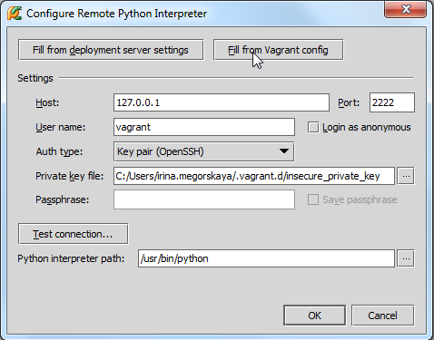
为了确认是否配置成功，单击Test connection... 按钮：
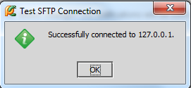
将其设置为默认解释器：
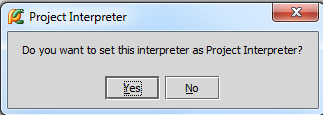
从现在开始我们就可以在VM虚拟机上运行所有的脚本工程了：
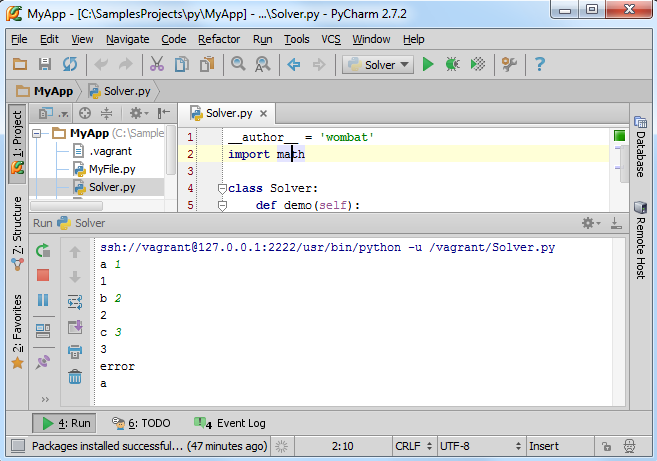
接下来我们通过SSH来登录virtual box。
4、链接SSH终端机
为什么需要登录呢？因为Pycharm要求你这么做。
在主菜单中选择Tools | Run SSH Terminal，如果你定义了不止一个主机（host），则选择一个你想要建立链接的（我们这里选择远程解释器）：
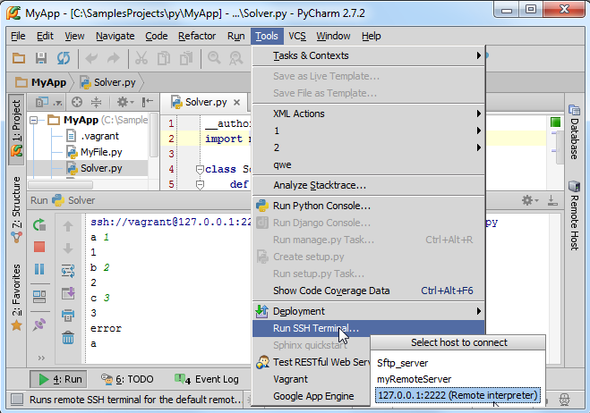
观察Run tool window窗口的控制台运行信息：
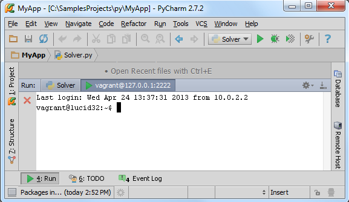
现在你已经能够和virtual box进行直接交互了，首先我们先确认你的工程目录是否进行了完整映射。只需观察vagrant's默认的共享文件夹信息：
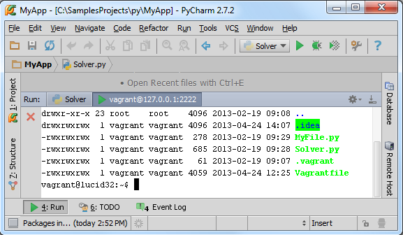
接下来运行一个可用的脚本文件，例如Solver.py：
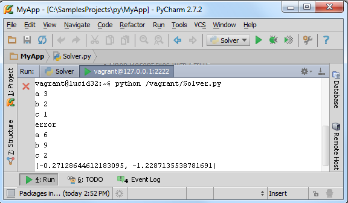
大功告成。